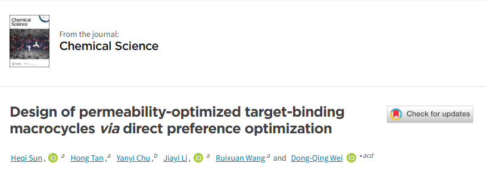
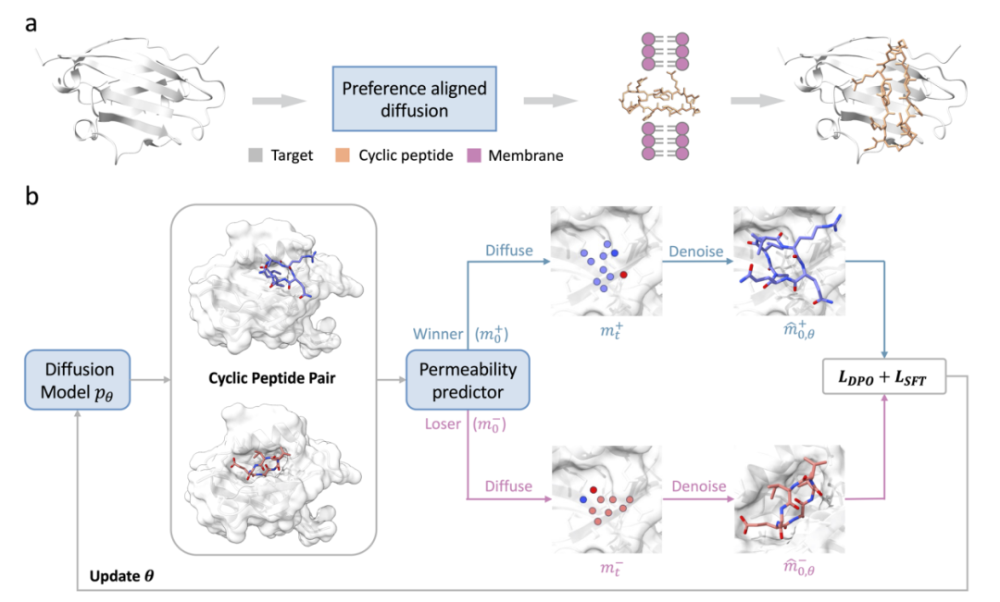
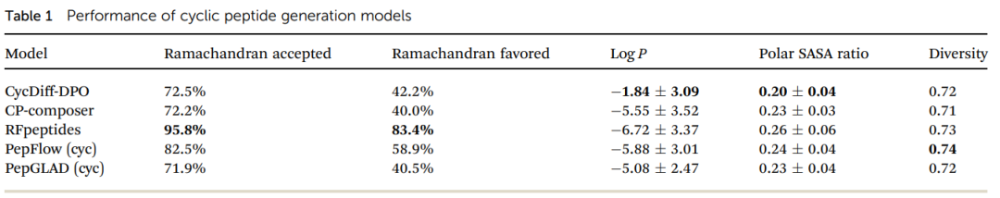
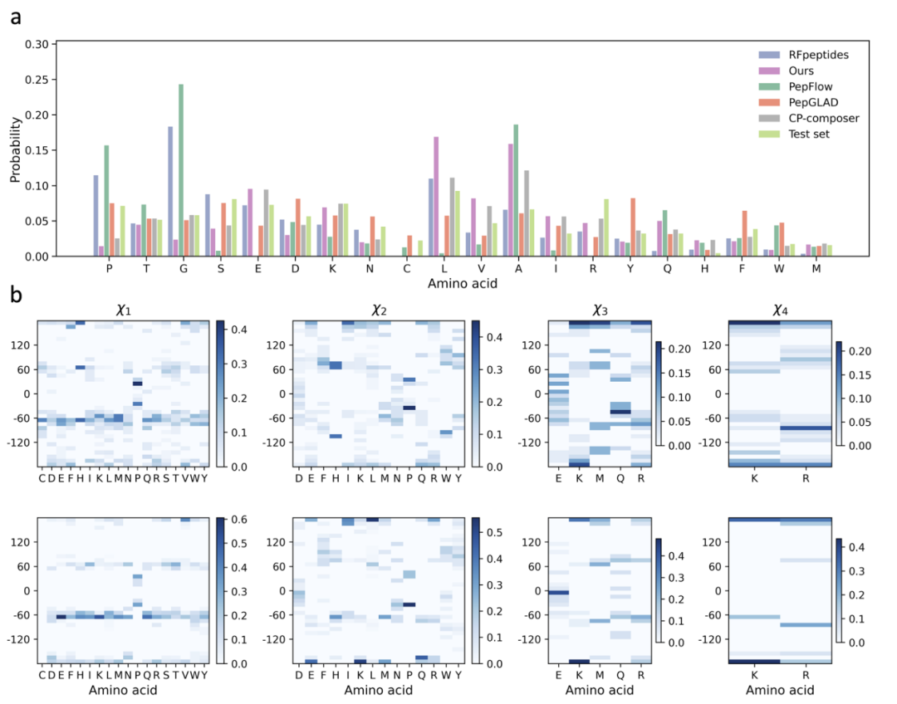
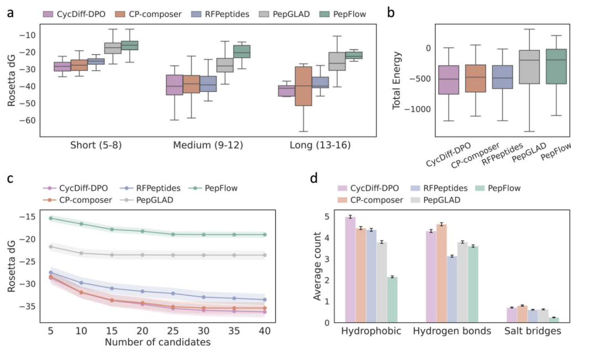
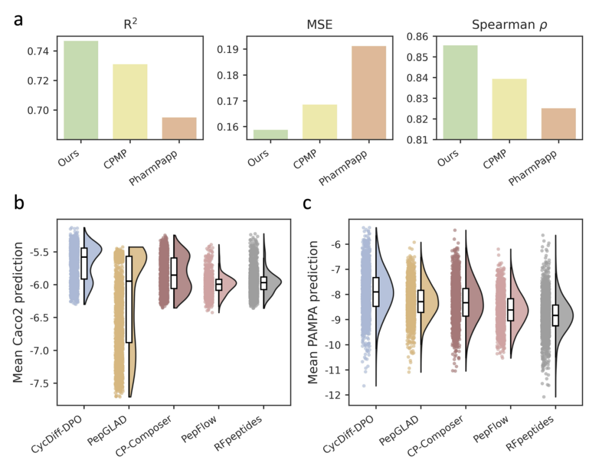
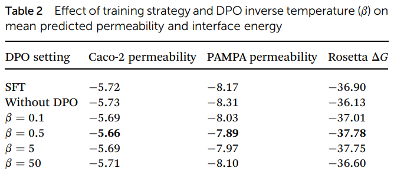
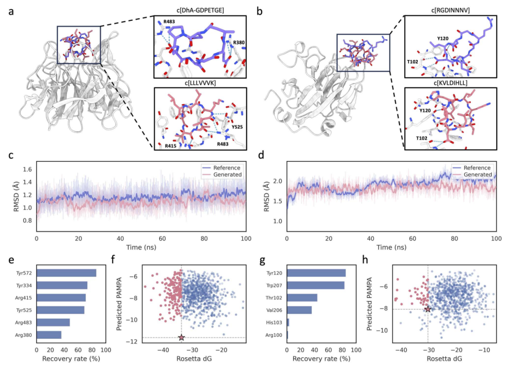

在环肽药物设计领域，环肽因其独特的构象约束特性而备受关注。其分子量介于传统小分子与生物大分子之间——既能够占据较大的蛋白-蛋白相互作用界面，又保留了相对较好的构象稳定性和代谢抗性。然而，一个长期存在的瓶颈制约了其向细胞内靶点的转化应用：
大量环肽虽具备纳摩尔级别的靶点结合亲和力，却因膜通透性不足而无法有效作用于胞内靶点，同时限制了口服给药的可行性。
这一问题本质上反映了分子设计中两个目标之间的张力：高结合亲和力往往依赖于极性相互作用和氢键网络的构建，而这恰恰会提高分子的极性表面积，不利于被动扩散穿膜。

CycDiff-DPO: A preference optimization-based diffusion model for macrocyclic peptide generation with improved membrane permeability 研究提出了一种名为 CycDiff-DPO 的生成式AI框架，其核心创新在于：
将膜通透性作为一个可优化的目标维度，直接纳入扩散模型的偏好学习过程中，而非采用后筛选或经验规则修正的策略。
换言之，该模型的目标函数同时涵盖了两个关键评估维度：
与目标蛋白的结合能力
跨膜被动扩散能力
为了训练和评估模型，研究团队构建了多层次的环肽数据集体系：
偏好对齐数据集（DPO训练用）：从PepBench数据库中筛选出4157个蛋白-多肽复合物，其中受体蛋白长度大于30个残基，多肽配体长度为4-25个残基。从中随机选取500个受体靶点，经CP-composer生成初始环肽结构后（排除9个生成失败的靶点），最终保留491个独特靶点，并按9:1的比例划分为训练集（441靶点）和验证集（50靶点）。
独立测试集（56个靶点）：为确保对未知靶点的泛化能力评估，研究从先前工作中整理的非冗余大数据库中进一步筛选。筛选标准包括：
配体长度限制在5-16个氨基酸（可支持头尾环化而不产生过大环张力）
排除环化后可能导致显著空间位阻或破坏结合构象的复合物
使用MMseqs2对受体进行聚类去冗余
排除与PepFlow、PepGLAD微调数据中靶点序列同一性超过40%的受体
最终得到56个非冗余靶点作为独立测试集，该数据集覆盖了不同物理化学特性的蛋白-多肽相互作用界面，能够系统评估模型的泛化能力。
通透性预测模型训练数据：使用CycPeptMPDB数据库中的Caco-2通透性子集，经去重后包含1273个具有实验测量logP值的独特环肽。每个肽段由Morgan指纹（半径=6，2048位）与35个二维物理化学描述符拼接而成的特征向量表示。
研究采用CP-composer作为基础生成模型。该模型将结合位点和环肽表示为全连接几何图，每个节点对应一个残基，包含氨基酸类型编码和原子坐标。模型是一个潜在几何扩散框架，通过变分自编码器将肽图映射到残基层级的潜在变量，再通过扩散去噪器在潜在空间中进行训练。采样时，潜在变量从先验分布初始化，经DDPM采样器逐步去噪T步后，由解码器重建回数据空间。

研究训练了一个机器学习通透性预测器，为每个环肽候选分子分配标量通透性分数，用于后续偏好对的构建。
预测器采用10个XGBoost回归器的集成模型，每个基模型采用不同的超参数配置（树数量150-300、最大深度5-9、学习率0.05-0.10、行采样比0.72-0.78、L1/L2正则化权重0.01-0.20/1.0-2.0），以促进模型容量和正则化强度的多样性。最终通透性分数为10个基模型预测的平均值。
五折交叉验证结果显示：R² = 0.747，MSE = 0.159，Spearman ρ = 0.856，性能优于CPMP和PharmPapp等最新深度学习模型。
为避免跨靶点差异的混杂影响，偏好对的构建在每个受体靶点内部独立进行。对于每个靶点，使用基础模型CP-composer生成K=200个环肽候选分子，经通透性预测器打分后，按分数降序排序，采用对称排名匹配策略：第i高分候选与第i低分候选配对。仅保留分数差 ≥ 0.1的配对，以保证监督信号的信息量。
最终形成偏好数据集 D_pref = {(c, m⁺, m⁻)}，其中m⁺为预测通透性更高的“胜者”候选，m⁻为“败者”候选。
给定上述构建的靶点条件偏好元组，研究使用直接偏好优化策略将预训练生成器向更高通透性方向对齐。设p_θ为当前扩散模型，p_ref为从同一预训练检查点初始化的冻结参考模型。DPO的核心思想是增加胜者候选相对于败者候选的似然比，同时对参考模型进行正则化。
由于扩散生成器中直接计算log p(m|c)需要边缘化整个去噪轨迹，计算上不可行，研究采用去噪误差代理作为替代。在自编码器产生的潜在扩散空间z中，采样扩散时间步t和噪声ε，计算当前模型与参考模型对设计m的去噪误差差距。通过这种代理，DPO损失函数可以在不计算精确似然的情况下进行优化。
同时，为稳定优化并保持基础生成器的序列-结构保真度，研究在胜者样本上增加了SFT风格的重构正则化项。总损失函数为 L = λ₁·L_DPO + L_SFT(m⁺)。
训练使用单张RTX 3090 GPU（24GB），AdamW优化器，β=0.5，损失权重λ₁=λ₂=λ₃=1，初始学习率1e-5，权重衰减0.05，早停耐心10轮，保留验证性能最优的10个检查点。
研究在56个独立测试靶点上对CycDiff-DPO进行了系统评估，与RFpeptides、CP-composer、PepFlow、PepGLAD等基线模型进行对比。
在立体化学质量方面，CycDiff-DPO的Ramachandran接受率和偏好率分别为72.5%和42.2%，与CP-composer（72.2%/40.0%）和PepGLAD（71.9%/40.5%）相当，表明偏好引导优化未损害结构合理性。

在物理化学性质方面，CycDiff-DPO产生了所有模型中最高的logP（-1.84）和最低的极性SASA比（0.20），表明溶剂可及的极性表面积减少——这是高通透性环肽的典型特征。重要的是，这些改进并非以牺牲分子多样性为代价：CycDiff-DPO的结构多样性得分为0.72，与基线方法相当。
氨基酸组成分析显示，CycDiff-DPO与参考分布的KL散度为0.30，远低于RFpeptides（0.66）和PepFlow（1.25）。亮氨酸和丙氨酸有一定程度的富集，但带电残基（E、K、R）和极性残基（T、Q）仍以可观的频率存在，反映了其在肽-受体界面形成氢键和盐桥的必要作用。未发现氨基酸层面的模式坍塌。
侧链二面角分布显示，CycDiff-DPO生成的环肽在χ₁和χ₂上与实验参考结构高度一致，较高级扭转角（χ₃、χ₄）虽有更多变异性，但整体趋势与参考一致。

在所有肽长度类别中，CycDiff-DPO均产生比竞争方法更优的Rosetta界面能。随着候选池扩大，其平均ΔG逐渐收敛，表明性能提升并非由孤立离群值驱动，而是反映了生成集合中高亲和力结合剂的系统性富集。复合物的Rosetta总能也向更有利方向偏移，支持结合自由能的改善与全局稳定的结合构象兼容。
相互作用模式分析显示，CycDiff-DPO设计的分子具有最高的平均疏水接触数，氢键数相对于CP-composer略有减少，盐桥数保持相当。这与通透性驱动优化的预期一致：富集疏水残基，减少暴露极性。

由于实验通量限制，研究使用多个独立机器学习预测器评估设计环肽的膜通透性，并报告跨模型平均结果以减少对单一评估器的依赖。
对于Caco-2通透性，使用CPMP和PharmPapp作为外部预测器；对于PAMPA通透性，使用DMPNN、AttentiveFP和CPMP。结果显示，CycDiff-DPO在所有模型和检测模态中均获得最高的预测通透性，且优势在单个预测器单独检验时仍然保持。值得注意的是，PAMPA并未用于构建偏好信号，但改进仍然泛化到了这一检测模态。

分子内氢键（IMHB）分析：为探究通透性提升是否归因于分子内氢键屏蔽，研究量化了生成环肽的IMHB数量。在所有五个生成模型中，CycDiff-DPO并未增加平均IMHB计数。对CycPeptMPDB数据库的分析也表明，高通透性环肽并未富集IMHB，反而在Caco-2和PAMPA测定中均显示出适度降低的IMHB计数。在膜模拟环境（ALPB氯仿）中的构象系综分析同样显示，IMHB计数与实验通透性之间无正关联。这些观察表明，IMHB屏蔽不太可能是本研究中通透性提升的主要驱动机制，更一致的机制是整体极性降低。
为量化偏好优化和逆温度参数β对通透性-亲和力权衡的调节作用，研究比较了基础生成器（无DPO）、SFT和不同β值的DPO。
结果显示：SFT仅提供边际的通透性改进；DPO在两个测定中均提升性能，最佳β值为0.5（Caco-2: -5.66，PAMPA: -7.89）。β的影响是非单调的——过低或过高均导致性能下降，这与偏好对信噪比和信息内容影响最优β的观察一致。重要的是，Rosetta界面能在所有条件下基本不变（-36.13至-37.78），表明通透性增益是在未损失结合能力的情况下实现的。

Keap1–Nrf2是细胞抗氧化反应的核心调控节点，是氧化应激驱动疾病（如慢性炎症和退行性疾病）的药物靶点。
研究以PDB ID: 7K2S为结构参考。CycDiff-DPO设计的最优环肽与参考分子空间叠合良好，能够保留与Keap1口袋中热点残基Arg415、Arg483、Tyr525的氢键相互作用。优化后的复合物达到Rosetta界面能-43.7 REU（参考为-33.7 REU），DMPNN预测的PAMPA得分为-5.93（参考为-11.00）。在100 ns显式溶剂分子动力学模拟中，设计肽保持稳定结合，肽重原子RMSD（1.09 Å）优于参考（1.17 Å）。热点接触恢复分析显示，Tyr572、Tyr334、Arg415、Tyr525等实验验证的热点残基被频繁恢复。
结合-通透性景观图显示，相对于参考分子，所有生成样本均实现更高的预测通透性，18.8%的候选分子同时在预测通透性和界面ΔG上优于参考。
SPSB2–iNOS是炎症和宿主防御中的重要相互作用。SPSB2通过招募泛素机制控制iNOS寿命，从而调节炎症中的一氧化氮输出。
研究以PDB ID: 5XN3为结构参考。代表性设计肽与参考结合几何高度重叠，界面ΔG略有改善（-31.23 vs. -30.34 REU），预测PAMPA提升（-6.82 vs. -8.10）。MD模拟中设计肽的肽重原子RMSD（1.82 Å）优于参考（1.91 Å）。热点残基Tyr120和Trp207被频繁恢复，Thr102和Val206也有贡献。
在结合-通透性景观图中，84.7%的生成样本预测通透性优于参考，其中78.7%同时表现出更优的界面ΔG。
关于带电残基的讨论：两个案例研究的最优设计均含有带电残基，可能引发对膜通透性的担忧。然而，在低介电膜环境中，可电离侧链的pKa会发生显著偏移。对于Keap1–Nrf2设计中的Lys，其pKa在膜内下移约4-5个单位至约5.6-6.5，在生理pH下主要以去质子化中性形式存在。对于SPSB2–iNOS设计中的Lys和Asp，Lys发生相同的下移，而Asp（水相pKa≈4.0）在膜环境中上移约2-5个单位至5.8-9.4，在pH 7.4下主要以质子化中性形式存在。因此，两个设计在穿膜过程中的实际电荷远低于水相电离状态所暗示的水平。关键通透性相关描述符（HBD、TPSA、logP）均显示出相对于参考肽的大幅改进。

作者明确指出了当前方法的主要局限：
第一，氨基酸空间受限。 目前模型仅支持20种天然氨基酸。真实药物化学实践中常用的N-甲基化、D-氨基酸、非天然氨基酸、主链杂原子替换等修饰策略，均已被证明可显著调控通透性和代谢稳定性。将本框架扩展至更广泛的化学空间是下一步的重要方向。
第二，依赖计算通透性模型。 通透性评估完全依赖计算预测器。研究通过多预测器共识、跨检测模态验证、膜模拟条件下的残基特异性pKa分析、以及针对口服生物可利用环肽性质空间的分析化学特征等手段进行了多维交叉验证，所有证据一致支持预测的通透性增益。然而，对最优设计进行膜通透性的湿实验验证仍是确认计算预测并建立框架转化相关性的必要下一步。
CycDiff-DPO 的核心贡献在于：
它验证了一个概念：通透性与结合能力并非不可调和的矛盾，通过适当的生成模型设计，可以在两种属性之间实现帕累托改进。
对于环肽药物发现而言，这一方向极具现实意义。大量具有高治疗价值的细胞内PPI靶点（如Keap1-Nrf2、SPSB2-iNOS、KRAS、c-Myc、p53-MDM2等）长期以来难以成药的根源之一，正是缺乏能够在结合力和穿膜能力之间取得平衡的分子骨架。CycDiff-DPO 提供了一个计算上可行、理论上可解释的生成策略，有望填补这一空白。
从方法学角度看，该框架的偏好学习思路具有很强的可迁移性——同样适用于其他需要同时优化多个正交属性的分子生成任务，如代谢稳定性、选择性、口服生物利用度等。